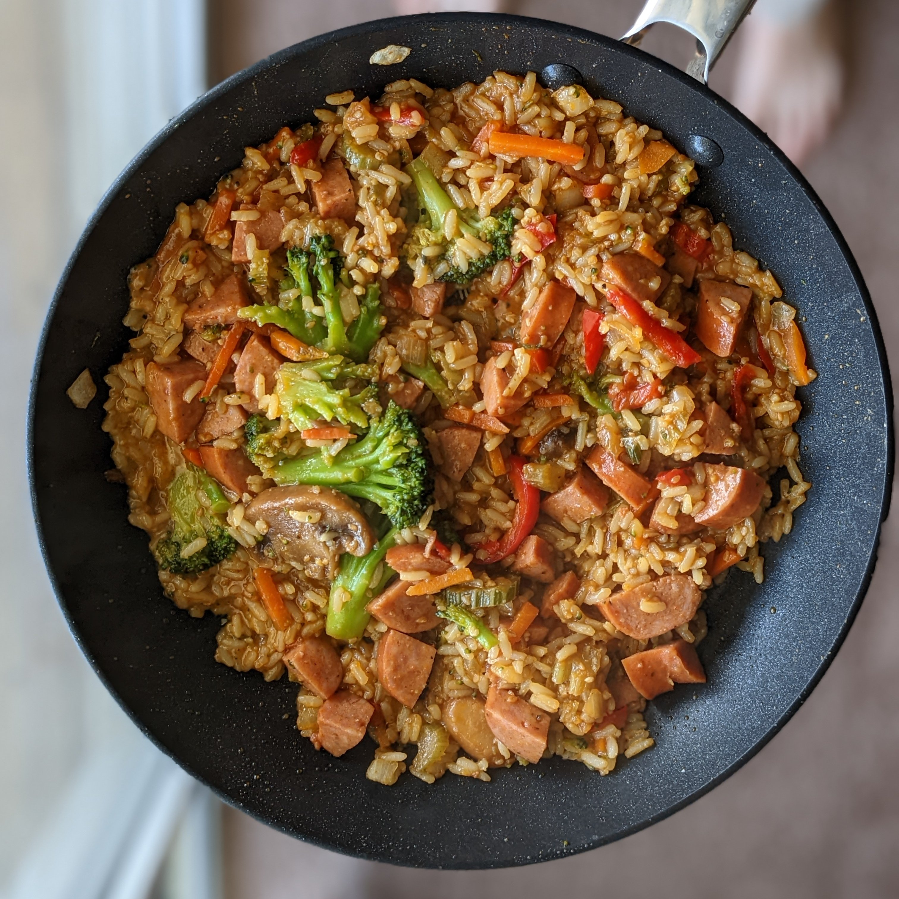
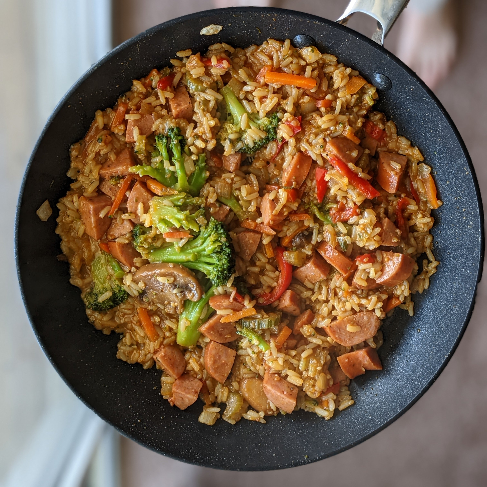
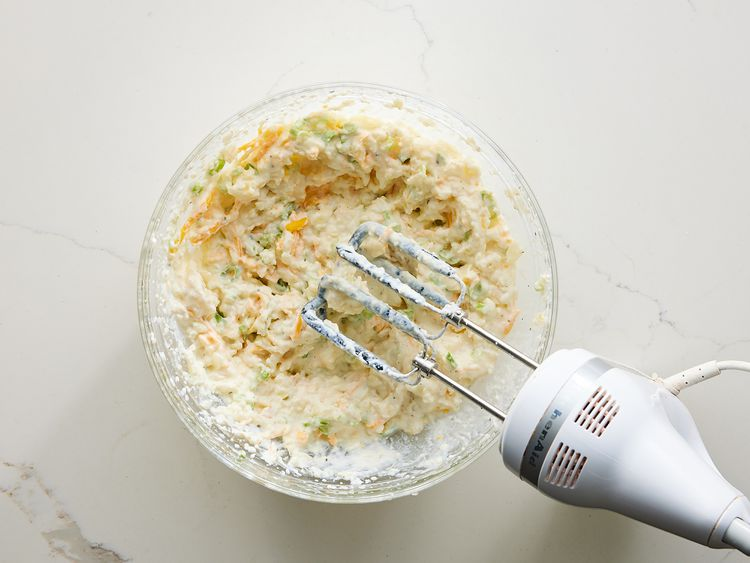
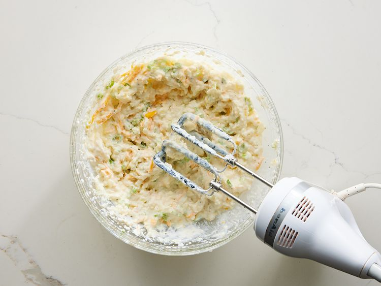

Double Chocolate Cookies
Origin: Michigan Source: Family Recipe Category: Dessert
My daughter learned to make these cookies at a baking camp at Zingermanns and has tweaked the recipe to fit the taste buds of her siblings. They are extremely sugary so the salt helps to balance it. Note, these cookies are best eaten very quickly.
Recipe Ingredients
- Unsalted butter
- Granulated Sugar
- Packed light or dark brown sugar
- Large egg
- Pure vanilla extract
- Semi-sweet chocolate chunks (melted)
- All-purpose flour
- Natural unsweetened cocoa powder
- Baking soda
- Salt
- Semi-sweet chocolate chunks
Recipe Steps
- In a mixing bowl cream together the butter, granulated sugar, and brown sugar
- Add the egg and vanilla extract and beat well
- Add the melted chocolate
- In a separate bowl combine the flour, baking soda, cocoa powder and salt
- Combine the wet and dry ingredients
- Add the unmelted chocolate chunks.
- Form 15 cookies and place on a baking sheet.
- Cook for 12 to 13 minutes at 350 degrees.
Additional Food images


Dead Simple Fried Rice
Origin: American/East Asian Source: Self Category: Main Dish
This Dead Simple Fried Rice recipe is an incredibly modular and tasty dish. At its core, it's just rice, vegetables, protein, and oil. As such, the dish can be modified to serve as many or as few people as needed with a wide variety of food preferences. Experimentation with what specific ingredients you enjoy the most will unlock the full potential of this dish.
Recipe Ingredients
- Long-grain white rice
- Frozen Vegetables
- Eggs
- Large egg
- (optional) Milk
- Oil of Choice
- Salt
- Soy Sauce
- (optional) Additional Sauce Curry Sauce/Paste, Spicy Teriyaki Sauce, and Sweet Chili Sauce are great options
- (optional) Additional Pre-cooked/Fast-cooking Protein of Choice Nuts, sausage, tofu, and bacon are great options
- (optional) Additional Fresh Vegetables Green onions, celery, and vidalia onions add great texture and flavor to the dish.
Recipe Steps
- In a rice cooker, add half a cup of rice, a cup of water, a touch of oil, and a pinch of salt. Cook the rice. Tip: if there are tough frozen veggies, such as broccoli, you might want to add the frozen veggies to the integrated steamer basket.
- On high medium heat on your stovetop, in a frying pan, add your chosen oil. Add some milk if desired. Then, scramble the eggs.
- Before the eggs are fully done, add the frozen vegetables. Add fresh vegetables when required so they are fully cooked by the end.
- (Optional) Add the additional protein when required so they are fully cooked by the end.
- Once the rice is done, add it to the pan. Poor your desired amount of Soy Sauce. Stir well.
- (Optional) After that, add your desired amount of additional sauce. Stir well.
- Let the fried rice cook until it is no longer visibly oily and the dish is nice and hot, with the vegetables fully cooked.
- Plate the fried rice. Enjoy!
Additional Food images

 

Twice Baked Potato
Origin: South American Source: Recipe Source Link Category: Main Dish, Comfort Food
These twice-baked potatoes work perfectly as a simple, crowd-pleasing entrée or as a rich side dish. It is believed that baked potatoes originate from South America, or more specifically, Peru. The Inca Indians in Peru were said to be the first to originally cultivate potatoes and when the Spanish conquistadors conquered Peru, they brought the potato to Europe.
Recipe Ingredients
- 4 large baking potatoes
- 8 slices bacon
- 1 cup sour cream
- ½ cup milk
- 4 tablespoons butter
- ½ teaspoon salt
- ½ teaspoon pepper
- 1 cup shredded Cheddar cheese, divided
- 8 green onions, sliced, divided
Recipe Steps
- Gather ingredients and preheat the oven to 350 degrees F (175 degrees C).
- Bake potatoes in the preheated oven until tender, about 1 hour, depending on the size of your potatoes. Set potatoes aside until cool enough to handle.
- Meanwhile, place bacon in a large, deep skillet. Cook over medium-high heat until evenly brown. Drain, crumble, and set aside.
- Slice potatoes in half lengthwise and scoop the flesh into a large bowl; save skins.
- Add sour cream, milk, butter, salt, pepper, 1/2 cup cheese, and 1/2 of the green onions to the potato; mix with a hand mixer until well blended and creamy.
- Spoon the mixture into the potato skins; top each with remaining cheese, green onions, and bacon.
- Return potatoes to the preheated oven and continue baking until the cheese is melted, about 15 minutes. Serve Hot!
Additional Food images

 

White Sauce Pasta
Origin: France/Italy Source: Own Recipe Category: Main Dish
White sauce pasta is a creamy and savory dish that can be enjoyed for either lunch or dinner. Inspired by a fusion of Italian and French cuisine, the rough texture of rigatoni pasta allows for heavier sauces to be picked up, including the flavor profile of this delicious sauce. This union of two cultures allows for the perfect balance between each component of the recipe, creating a fulfilling entree that every individual can enjoy.
Recipe Ingredients
- Olive Oil
- Butter
- Diced Onion
- Diced Garlic
- Diced Bell Pepper
- Rigatoni Pasta
- Heavy Whipping Cream
- Milk
- Shredded Parmesan Cheese
- Salt
- Ground Pepper
- Garlic Powder
- Onion Powder
- Paprika
- Oregano Leaves
- Bay Leaves
- Parsley Leaves
Recipe Steps
- Bring a pot of water to a boil. Once the water begins to bubble, add in the pasta, salt, and a drizzle of oil.
- While the pasta is cooking, heat oil and butter in a saucepan.
- Once the butter has melted, add in diced onions and garlic. Sauté them until golden brown or aromatic.
- Stir in the bell pepper until slightly softened.
- Pour in the heavy cream, milk, salt, ground pepper, garlic powder, onion powder, paprika, oregano leaves, and bay leaves into the saucepan. Mix well and allow the mixture to simmer. Adjust the seasoning to your taste.
- Add the shredded parmesan cheese and stir until melted.
- Throw in pasta and mix until the pasta is coated with the creamy sauce.
- Garnish with parsley leaves, and enjoy.
Additional Food images


Tomato basil pasta
Origin: Italian Source: Recipe Source Link Category: Main Dish
This recipe is a fantastic way to step up your pasta game without taking too much more of your time. It tastes way better than basic pasta with jarred sauce! I originally found this when my sister made it, and got the recipe off of Bon Appetit's website. PS avoid using the shaker parmesan - I used that the first time I made this and it drew down the quality of the dish.
Recipe Ingredients
- Pasta
- Tomatoes (any larger than cherry)
- Basil
- Red wine vinegar
- Extra virgin olive oil
- Crushed red pepper
- Finely grated block of parmesan
Recipe Steps
- Cut tomatoes along the equator.
- Squeeze juice and seeds out of tomatoes and discard.
- Cut juiced tomatoes into small-ish pieces.
- Smush down with a large spoon to release some leftover juices.
- Add in vinegar, olive oil, crushed red pepper, and half of parmesan.
- Let marinate for half an hour.
- Add basil.
- Cook pasta.
- Toss marinade with cooked pasta and serve topped with remaining parmesan.
Additional Food images